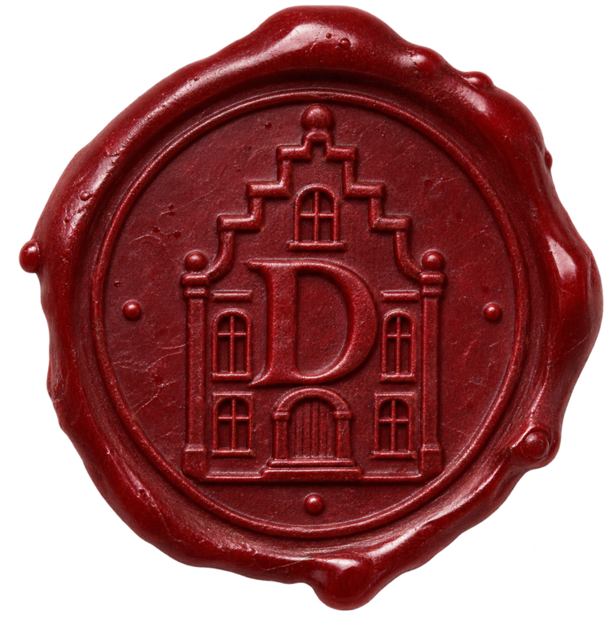

Vinny has carried this since 1931. In the ending scene he hands it to Gnomey, and from that moment the house is his. Before then nobody at the table should see it: the strongbox in the study holds the settlement, and the deed's slot is empty.
US Letter, portrait, 100% / actual size, colour, on cream or parchment card stock if they have it. Fold it in thirds afterwards so it looks like it has lived in a jacket pocket for seventy years.
State of New York · County of Columbia · Town of Transyltown
Bearer Deed of Conveyance
MADE the fourteenth day of November, in the year nineteen hundred and thirty-one,
BETWEEN Cornelis Dood, of the Town of Transyltown, party of the first part, and
THE BEARER OF THIS DEEDparty of the second part,
WITNESSETH, that the party of the first part, in consideration of the sum of Eleven Dollars and Forty Cents ($11.40), lawful money of the United States, paid by the party of the second part, does hereby grant and release unto the party of the second part, and unto whosoever shall hold this instrument hereafter,
ALL THAT certain dwelling known as DOOD MANSION, standing upon the hill at the edge of the said Town, with its forty rooms, its cellars, and all land and rights of entry thereto;
SUBJECT to the Articles of Settlement made between the same parties upon the same night, under which the present occupants may remain at the pleasure of the bearer.
TO HAVE AND TO HOLD the premises herein granted unto the bearer, and to each bearer after, forever.
